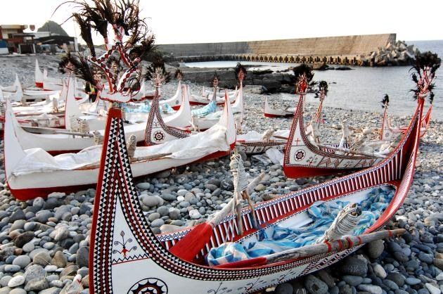
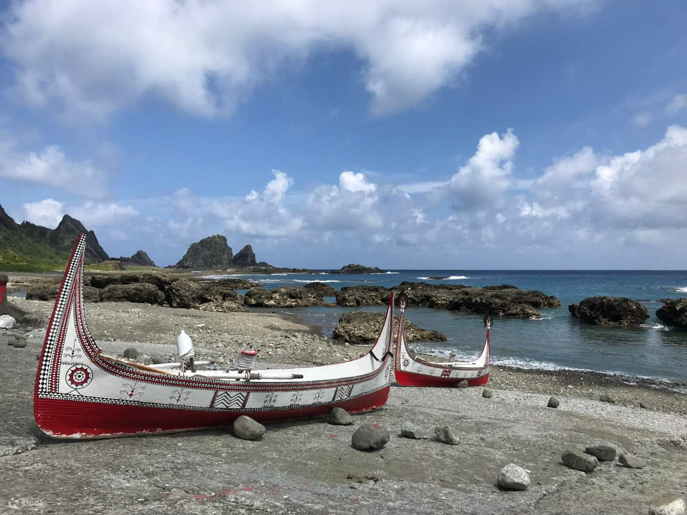

達悟族居住於臺東縣蘭嶼鄉境內，是臺灣原住民中唯一的離島民族，由東清、野銀、紅頭、漁人和椰油六個部落組成，舊稱雅美族，在1998年更名為達悟族。目前關於蘭嶼的相關研究與報導，分別出現官方採用雅美、民間採用達悟這兩種不同的族稱。總人口數為4,684 人（2020年1月）。
有豐富的神話傳說與歲時祭儀，並具有明顯的海洋特質，發展出獨特的海洋文化，物質文化表現極為豐富，造船術，紡織、捏陶、金銀器打造之技藝都富有特色。另外雅美族與菲律賓巴丹群島住民的語言與文化相近而能彼此溝通無礙。
據蘭嶼島上史前的考古遺址考證，達悟（雅美族）居處蘭嶼可能有數百年、甚至上千年的歷史，而達悟（雅美族）在語言、文化上源自於菲律賓北邊的巴丹群島，屬於更大的南島語族成員。蘭嶼因地理位置特殊，為東南亞人類與動植物遷移之主要踏腳石，蘊育著達悟文化及豐富而罕見的動植物，對於學術界在研究台灣、琉球與南洋地區之土著血源與文化、古地理、古生物地理及生物相等深具價值。
日據時期，日本政府於西元1895年正式設定蘭嶼為研究區，保持當地居民傳統生活狀態，禁止外人移殖或開發，經五十年殖民統制仍保存達悟文化獨特風貌。達悟族是典型的海洋民族，和臺灣本島上的原住民有很大的差異，漁業是蘭嶼最重要傳統的生計，而相關的曆法、祭典，或是在藝術創作的表現，都和漁撈活動有密不可分的關係。
達悟族是平權的社會組織（沒有所謂的「頭目」或「酋長」），也沒有釀酒的文化與獵頭出草的習俗，其中祖靈信仰、飛魚季、地下屋、拼板舟、惡靈觀（anito）、頭髮舞，以及其與南方菲律賓巴丹群島島民的血統、文化高度關聯，才是最能凸顯蘭嶼達悟族群所具有的獨特文化傳統。

